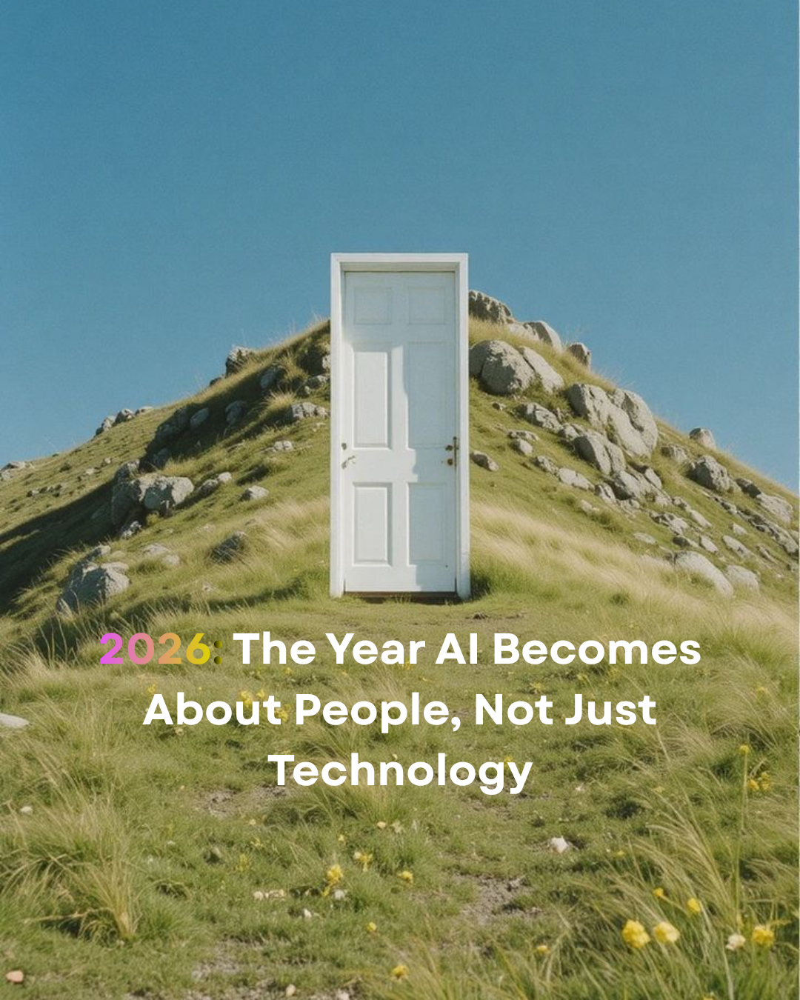

The internet became transformative
技术真正改变世界的时候
when everyone could connect.
往往是它变得无形的时候。

Begin reading开始阅读For years, the AI race has been defined by one question:
Who can build the most powerful model?
过去几年，AI 竞争的核心问题一直是：
谁能创造更强大的模型？
Bigger models.
更大的模型。
More parameters.
更多的参数。
More advanced capabilities.
更强的能力。
Who can make AI truly accessible and useful for everyone?
谁能让 AI 真正服务于更多普通人？
The future of AI should not belong only to engineers, researchers, or people who know how to write complex prompts.
未来的 AI 不应该只属于工程师、研究者，或者懂复杂提示词的人。
They will be the ones that help ordinary people do things they could never do before.
而是让普通人能够完成过去做不到的事情。
Powerful technology matters most when it expands what people can do.
真正重要的，是技术能让更多人做到什么。
The internet became transformative
技术真正改变世界的时候
when everyone could connect.
往往是它变得无形的时候。
Smartphones changed the world
当人们不再关注技术本身
when everyone could create and share.
而只是自然地用它工作、创造和生活。
AI will reach its true potential
2026 年，我希望更多企业意识到：
when everyone can use it to think, create, and solve problems.
AI 的未来，不只是制造更聪明的机器。
The history of technology has always followed the same pattern:
技术真正改变世界的时候，往往是它变得无形的时候——
Lowering barriers.
降低创造的门槛。
Expanding access.
消除能力的壁垒。
Turning ideas into reality.
帮助每个人把想法变成现实。
The future of AI is not just about building smarter machines.
AI 的未来，不只是制造更聪明的机器。